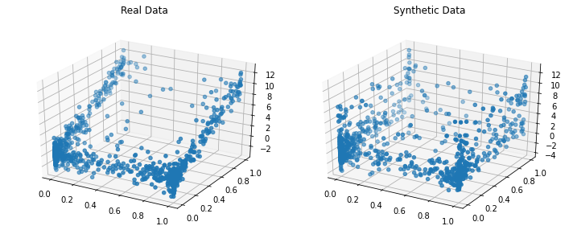

Quickstart¶
In this quickstart, we show how to model a multivariate dataset and then generate a synthetic data that resembles it.
[1]:
import warnings
warnings.filterwarnings('ignore')
from copulas.datasets import sample_trivariate_xyz
from copulas.multivariate import GaussianMultivariate
from copulas.visualization import compare_3d
# Load a dataset with 3 columns that are not independent
real_data = sample_trivariate_xyz()
# Fit a gaussian copula to the data
copula = GaussianMultivariate()
copula.fit(real_data)
# Sample synthetic data
synthetic_data = copula.sample(len(real_data))
# Plot the real and the synthetic data to compare
compare_3d(real_data, synthetic_data)
